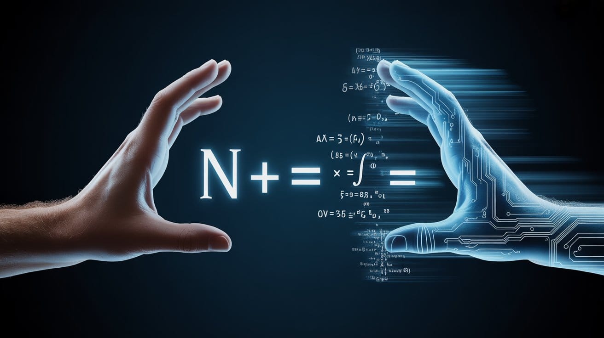

The Proof Was Never the Point
A computer verified its first physics paper and found an error peer review missed. A mathematician quit his tenured position to argue that mathematics has been misdefined for 2,300 years. These are the same story.


“On the most charitable reading of the history of mathematics, the weights have been wrong for a very long time.”
— David Bessis, Mathematica: A Secret World of Intuition and Curiosity (2024)

Mathematics Has Been Wrong About What Mathematics Is
A computer checked the math. The math didn’t pass…
This is the third essay in a three-part series. W18, “The Cost of Being Right,” mapped the machinery that keeps wrong beliefs alive long past the point when the evidence has killed them—economic entrenchment, institutional inertia, the non-epistemic functions that make correction too costly to attempt. W19, “The Wrong Name on the Door,” went upstream: misattribution installs wrong causal models, which generate wrong questions, which structurally foreclose the corrections before they can be formulated. This week's (W20) goes one level deeper still. What happens when a discipline gets the definition of itself wrong?
Two things happened recently that belong in the same sentence, and nobody is putting them there.
First: a computer program called Lean, designed to rigorously verify mathematical proofs, was turned for the first time toward a physics paper. It found a fundamental error. The researcher who did it asked the obvious follow-up question out loud: how many other physics papers contain the same kind of mistake?
Second: a mathematician named David Bessis, formerly of CNRS, where he held a permanent tenured research position he voluntarily quit, has been arguing in his book Mathematica and on Substack that mathematics has been operating under a misdefinition of itself for approximately 2,300 years. Not a minor misdefinition. A foundational one. The kind that gets taught to every student as settled fact before they’re old enough to question it.
The official definition of mathematics, depending on which version you learned, is either: (a) the study of numbers, shapes, and abstract structures that exist in some Platonic realm, or (b) a formal game of symbols manipulated according to axioms, where truth means logical derivation from agreed premises. Bessis argues both are wrong... not partially wrong, not subtly wrong, but wrong in a way that has been actively misleading mathematicians, students, and anyone trying to understand what the discipline actually is for most of recorded intellectual history.
What Mathematics Actually Is
Bessis’s definition, which he calls conceptualism, and traces through Bill Thurston’s 1994 paper “On Proof and Progress in Mathematics” and Reuben Hersh’s 1979 “Some Proposals for Reviving the Philosophy of Mathematics,” is this: mathematics is a cognitive practice. It is a technique for transforming intuition. The formal proofs are not the mathematics. The formal proofs are scaffolding. The meaning-making they support, now, that's human work.
This sounds innocuous until you follow it to its consequences.
If mathematics is a formal game of symbols, then a proof is a sequence of derivations from axioms, and truth is identical to formal derivability. Lean operates in this space. Lean is extremely good at this space. Lean is, in a meaningful sense, better than humans at this space.
But Bessis’s point is that mathematicians have never actually operated in this space, despite officially claiming to. When you write a mathematics paper, you're not deriving everything from Zermelo-Fraenkel axioms. You're writing a hybrid, the formal proofs mixed with hand-waving and linguistic shorthand. It communicates a mathematical idea to other mathematicians who can fill in the gaps, and the gaps are enormous. Russell and Whitehead needed hundreds of pages in Principia Mathematica to prove that 1 + 1 = 2. The actual published literature is almost entirely composed of things that would take the equivalent effort to fully formalize, and nobody does it.
This is not dishonesty. It is a functional division of labor between the formal layer (which is technically the only “real” mathematics, under the official definition) and the meaning layer (which is where the actual mathematical thinking happens). Every working mathematician knows this. Most of them call themselves Platonists or formalists when asked at cocktail parties, and then go home and do mathematics in a completely different way from what either Platonism or formalism would predict.
Bessis pushes on this: if you genuinely believed mathematics was a formal symbol game, you would not care whether a wrong proof was “fixable.” Fixing a proof is not a concept that exists in formal systems. You either have a valid derivation or you don’t. There is no proximity between proofs. There is no notion of a proof being “close to correct.” Those are human, intuitive, meaning-laden concepts that only make sense if mathematics is actually a cognitive practice with content and structure that exists in minds, not just a string manipulation game.
The Crystalline Cohomology Bug
Here’s a case that is directly relevant to the Lean physics finding, and it has received almost no attention outside of specialist mathematics circles.
A team led by Kevin Buzzard, himself a committed formalist, someone who genuinely believes in the formal-game view of mathematics, was attempting to use Lean to formalize the proof of Fermat’s Last Theorem. The formalization project is multi-year presently ongoing. However, they hit a snag only a few months in. A lemma in the foundational paper of crystalline cohomology, a technical theory developed by Grothendieck and his students, used throughout modern algebraic geometry, was wrong. Not subtly wrong, not wrong in an
obscure edge case. Wrong in a way that, under strict formal rules, would mean that crystalline cohomology as a theory had never been validly established.
Buzzard, the formalist, described his reaction in a blog post: officially, under his own view of mathematics, crystalline cohomology had disappeared. Vanished. Disintegrated into nothingness, because its foundational lemma was invalid.
But he knew it was fixable. The theory had been working fine for thirty of forty years. If the foundations were actually broken, someone would have crashed into a contradiction by now.
This is extraordinary. Buzzard was relying on the accumulated human intuitive experience of a mathematical community using a theory successfully over decades as evidence that the formal error was correctable. That the theory was pointing at something real even if its formal justification had a gap. He was doing exactly what Bessis says mathematicians actually do, while officially believing something completely different.
The fix was eventually found. Crystalline cohomology survived. But the episode is a perfect controlled experiment for the difference between what mathematics officially is and what it actually is.
What the Lean Physics Finding Actually Means
The New Scientist report from March 2026 brings Buzzard’s situation into physics. A computer language designed to verify mathematical theorems was turned toward a physics paper and found a fundamental error. It was the first physics paper analyzed this way.
The physics paper in question was widely cited. It had passed peer review. It had been used by other researchers building on its results. The error was not caught by human expert reviewers examining the paper in the normal way.
This is not surprising. It is the predicted consequence of two things operating simultaneously: the informal hybrid nature of how physics and mathematics papers are actually written, and the gap between what “peer review accepted” means and what “formally verified” means.
Peer review is not proof-checking. Peer review is a process in which other humans with the relevant intuitive background and expertise read a paper and assess whether it seems right, whether it coheres with their understanding of the field or whether the approach is sound, whether the results are plausible given what they already know. Peer review catches a lot. It does not catch everything. It systematically fails to catch errors that are in the formal machinery of a proof but are not detectable by intuitive coherence-checking because the intuitive picture is correct even when the formal derivation is wrong.
W18 documented this from inside mathematics itself: Kempe’s false proof of the four-color theorem was accepted by expert mathematicians for eleven years before Percy Heawood found the flaw in 1890. These were not ambiguous empirical findings, they were logical arguments scrutinized by people whose professional identity is built around not making logical errors. If the correction mechanism can fail for eleven years in the domain with the strictest possible verification standards, the physics literature, considerably less formal, and offers no reason for optimism.
The intuition was fine. The formal mechanism had a crack in it. Lean found it. The researcher’s question, how many other physics papers have similar problems? It has no comfortable answer.
The 2,300-Year Error and What It Costs
Bessis dates the error to Plato. Plato said mathematical objects—numbers, circles, perfect triangles—exist in a transcendent realm that humans perceive through reason. That's what gave mathematics its prestige: access to timeless, necessary truth instead of contingent, empirical approximation. The Platonic framing spread through Euclid’s Elements, which treated geometry as the study of objects with objective, mind-independent existence. It became the canonical view.
Enter Formalism, circa 19th and 20th centuries. Formalism traded Platonic objects for axiomatic systems but kept the key claim: mathematics is mind-independent.
Pure logical structure. No essential human element.
Bessis says both views get it wrong. They misunderstand what mathematicians do, what mathematical understanding is, and what counts as progress. Not as a sociological critique. As a claim about the cognitive mechanism underlying mathematical practice.
I should be clear about what I find compelling and what remains open. The descriptive claim, that mathematicians actually work through intuitive meaning-making rather than formal derivation, is very strong. The Buzzard case is evidence for it. Every working mathematician I’ve encountered confirms it. Thurston’s 1994 paper articulated it from inside the profession.
But Platonism hasn’t survived 2,300 years purely on institutional prestige. It has genuine explanatory power that conceptualism hasn’t fully accounted for, particularly around what Eugene Wigner called “the unreasonable effectiveness of mathematics in the natural sciences.”
If mathematics is purely a cognitive practice shaped by human minds, why does it map so reliably onto physical reality with such frequency? Why are structures that are developed for purely mathematical reasons—group theory, Riemannian geometry, Hilbert spaces—turn out to be exactly the structures physics needs decades later? The Platonist has a ready answer: because mathematics is discovering the structure of reality, not inventing it. Bessis doesn’t have an equally clean answer to this, yet.
I don’t know whether conceptualism will fully displace Platonism the way the evidence displaced dietary cholesterol. It’s possible that the truth is some hybrid that hasn’t been articulated yet. What I do know is that the descriptive accuracy of Bessis’s account, what mathematicians actually do, is superior to both Platonism and formalism. And that’s enough to take the downstream consequences seriously.
W19 provided evidence for this without naming it. The case of Pascal’s Triangle, independently discovered across at least four distinct mathematical traditions over 1,800 years, is predicted by conceptualism and unexplained by Platonism. If mathematical objects exist in a mind-independent Platonic realm, the cross-cultural convergence pattern is mysterious: why would separate civilizations all access the same Platonic object at roughly similar stages of mathematical development? But if mathematics is a cognitive practice shaped by human cognitive architecture, you’d predict exactly what the historical record shows, an independent convergence wherever the relevant cognitive sophistication develops, because the practice is shaped by the structure of the minds doing it, and human minds share that structure.
The practical cost of the misdefinition is not abstract. If you tell students that mathematics is about perceiving Platonic objects that either click for you or don’t, you are telling students who do not yet perceive those objects that they lack some innate faculty, some special connection to the realm of mathematical forms. This is both false and psychologically devastating. Mathematical intuition is not a perception of pre-existing objects. It is a built cognitive capacity that develops through specific kinds of mental practice. It is more like learning to play the violin than like having good eyesight.
If you tell students that mathematics is a formal symbol game with no essential human content, you produce graduates who can manipulate the notation without understanding what they are doing, who can pass examinations by pattern-matching to known proof structures without developing the intuitive foundation that makes mathematical understanding self-correcting and generative.
There is limited but suggestive evidence for this. Boaler’s longitudinal studies of mathematics education have documented that students taught through conceptual problem-solving approaches develop more flexible and transferable mathematical understanding than those taught through procedural drilling. This is consistent with the prediction that mathematics is a cognitive practice that develops through use, not a body of facts to be memorized or a perception to be passively received. The research is contested and the effect sizes vary, but the direction is consistent with Bessis’s account.
W19 argued that wrong attributions install wrong causal models, which foreclose entire categories of questions before they can be asked. Mathematics has committed a version of this error against itself, to put the wrong name on its own door. If mathematics is Platonic perception, you ask: who has innate mathematical talent? If it’s a formal symbol game, you ask: can we automate it? If it’s a cognitive practice, you ask: how does mathematical intuition develop, and how do we deliberately cultivate it? Bessis thinks we’ve been asking the first two questions for 2,300 years while the third, the one that would actually help people learn mathematics, has gone almost entirely unasked. The wrong definition hasn’t just misled students. It has made the right pedagogical questions structurally invisible.
And if you run an institution, a university, a journal, or a funding body on the basis that mathematics is either Platonic perception or formal symbol manipulation, you design your evaluation, credentialing, and review processes around those models. You get peer review that checks intuitive plausibility rather than formal validity, because the formal layer is officially what mathematics is but practically is treated as identical to the intuitive layer. The crystalline cohomology bug. The physics error that Lean found.
The Convergence Point
The Lean finding and Bessis’s argument converge on the same point: there is a structural gap between what mathematics and physics officially are, formal systems with explicit verification standards, and what they actually are, which is informal hybrid practices that rely heavily on human intuitive coherence-checking.
This gap has been productive. Informal hybrid practices are how mathematics actually advances. The strict formalist alternative, writing everything out in full Zermelo-Fraenkel derivations, would produce papers of millions of pages for results that currently run to twenty. Nobody would do it. Mathematics as a productive discipline would stop.
But the gap is also where errors hide. Errors that the formal machinery would catch. Errors that human intuition, operating on the meaning layer rather than the syntactic layer, consistently misses.
Lean is not a replacement for mathematical practice. It is a probe that can, for the first time, actually check the formal layer against itself. What it is finding is that the formal layer and the intuitive layer do not always agree, however when they disagree, the community has been resolving the disagreement in favor of the intuitive layer, sometimes correctly (the crystalline cohomology bug was fixable) and sometimes incorrectly (the physics paper was wrong).
Bessis’s argument provides the framework for understanding why this happens. Mathematical papers are written by humans for humans, designed to transfer meaning, to build intuitive representations in the reader’s mind. They are not designed to survive machine verification, because machine verification is not what anyone thought “correct” meant in practice. The gap between the two meanings of “correct” is exactly the space where the Lean finding lives.
This is also where the three essays in this sequence converge. W18 showed that the correction mechanism breaks down when wrong beliefs serve too many non-epistemic functions to be dislodged by evidence alone. W19 showed that wrong attributions install wrong causal models, making the corrective questions unaskable. W20’s contribution is that mathematics has been doing both of these things to itself simultaneously, maintaining a false definition that serves its institutional prestige, which forecloses the questions that would reveal what the discipline actually is, which leaves the gap between formal and intuitive correctness unnamed and unmanaged. Lean is making that gap visible for the first time. What the field does with the visibility is the open question.
The Uncomfortable Inventory
The New Scientist article is appropriately cautious. It reports a single finding and asks a question. But the question has a known partial answer from mathematics itself, where the formalization project has been running longer.
The Buzzard group found a serious error in a foundational paper of crystalline cohomology that had been in use for decades. Efforts to formalize other parts of mathematics have found errors in textbooks, in published papers, and in results that were considered established. These findings are not typically publicized outside specialist communities, partly because the errors are usually fixable and partly because acknowledging that major published results have formal gaps creates uncomfortable questions about what “established” means.
The physics literature is larger than the mathematics literature, considerably less formal in its proof standards, and has until March 2026 had essentially no exposure to machine verification. The question of how many physics papers contain formally invalid steps that have passed peer review is genuinely open, and the honest answer is that it is likely a non-trivial number.
What Lean and its successors are doing to mathematics and physics is something like what better evidence did to the single-gene model of eye color, documented in W18’s account of the thirty-year correction cycle, or what Brown’s discovery of Eris did to Pluto’s planetary status: applying a more rigorous standard of scrutiny to results that were accepted under a less rigorous standard, and finding that some of those results do not survive the upgrade.
This is not a crisis. It is, as Bessis would put it, the back-and-forth process between formalizing and understanding. Mathematics does not progress by abandoning everything that cannot be immediately verified to machine standard. It progresses by using the gap between intuitive and formal correctness as a productive space, allowing the intuition to run ahead, then using formalization to check what the intuition produced and fix what it got wrong.
The 2,300-year mistake was not that mathematics was being done informally. It was that the official story of what mathematics is, Platonic or formalist, systematically obscured the cognitive mechanism by which it actually works. And that obscured mechanism is exactly what the Lean finding is revealing.
What Comes Next
Lean and its successors will find more errors. Some will be fixable; some will require revisiting results that fields have built on for years. The physics community will need to develop a relationship with formal verification that it has not previously had, because the informal peer review process is demonstrably not sufficient to catch all formally invalid steps in complex papers.
More importantly, the Lean findings will force a conversation about what “correct” means in mathematics and physics. A conversation that Bessis’s work suggests has been deferred for 2,300 years because the official answer was comforting and the real answer is complicated.
The real answer is: correct means something different to the intuitive layer and to the formal layer, and we have been operating as if those two things are always the same. They are usually the same. When they are not the same, human reviewers consistently favor the intuitive layer, and the formal layer error propagates.
The back-and-forth between understanding and formalization is not a failure mode of mathematics. It is the mechanism of mathematics. But managing it honestly requires acknowledging the mechanism exists, that the mathematics is a cognitive practice, not Platonic perception or a formal symbol game.
W18 asked whether the correction mechanism itself is still functioning, a question made urgent by AI-generated paper mills flooding the literature with fabricated evidence faster than peer review can filter it. W19 showed that the mechanism was never functioning as well as we thought, because wrong attributions were foreclosing the corrective questions upstream of evidence entirely. W20’s answer is that the correction mechanism has a third vulnerability that predates both: a wrong definition of what we’re even doing, one that makes the formal-intuitive gap invisible and leaves it unmanaged.
The Lean computer found the error. The physicist who used Lean is asking the right question. Bessis spent thirty years proving theorems and then quit his permanent position to write about why our definition of mathematics has been wrong since Plato.
These three things belong in the same essay, alongside W18’s machinery of institutional persistence and W19’s mechanism of attributional foreclosure. The correction never arrives when the wrong belief serves too many non-epistemic functions, when the wrong name on the door makes the right questions unaskable, or when the discipline doesn’t have the vocabulary to describe its own gap. Mathematics has managed all three simultaneously for 2,300 years.
Lean gave us the vocabulary. The question now is whether we use it.
Don't miss the weekly roundup of articles and videos from the week in the form of these Pearls of Wisdom. Click to listen in and learn about tomorrow, today.
Sign up now to read the post and get access to the full library of posts for subscribers only.

About the Author
Khayyam Wakil is a researcher at The ARC Institute of Knowware and founder of CacheCow Systems Inc., an Agriculture Intelligence suite (which is either a livestock intelligence company or the only EMP-hardened food security infrastructure being built without anyone asking for it, depending on when you're reading this). His work spans epistemology, institutional behavior, and the mechanics of knowledge correction, the gap between what civilizations know and what they build.
He is the author of the forthcoming Knowware: Systems of Intelligence — The Third Pillar of Coordination and The Constitutional Sieve Research Programme. Token Wisdom is where he writes while the work is still warm. He remains professionally uninterested in whether this essay makes you comfortable.
References & Sources
- Bessis, D. (2024). Mathematica: A Secret World of Intuition and Curiosity. Translated by Kevin Frey. Yale University Press. — The primary source for the conceptualist argument. Bessis’s central claim is that mathematics is a cognitive practice—a technique for transforming intuition—and that both Platonism and formalism fundamentally misrepresent what mathematicians actually do.
- Thurston, W. P. (1994). “On Proof and Progress in Mathematics.” Bulletin of the American Mathematical Society, 30(2), 161–177. https://doi.org/10.1090/S0273-0979-1994-00502-6 — The foundational text for the view that mathematical understanding is irreducibly human and that proofs serve communication rather than constituting mathematical truth.
- Hersh, R. (1979). “Some Proposals for Reviving the Philosophy of Mathematics.” Advances in Mathematics, 31(1), 31–49. https://doi.org/10.1016/0001-8708(79)90018-5 — Argued that the philosophy of mathematics should attend to what mathematicians actually do rather than to idealized formal accounts. Controversial at publication; Bessis traces his conceptualism partly through this lineage.
- Russell, B. & Whitehead, A. N. (1910–1913). Principia Mathematica. Cambridge University Press. — Referenced for the famous hundreds-of-pages derivation that 1 + 1 = 2, illustrating the gap between formal derivation and everyday mathematical practice.
- Buzzard, K. (2024–2026). Blog posts on the Lean formalization of Fermat’s Last Theorem, including the discovery of the crystalline cohomology bug. Available at: https://xenaproject.wordpress.com/ — Buzzard’s account of finding a foundational lemma error in crystalline cohomology during the formalization project, and his admission that he relied on decades of successful community use as evidence the theory was “fixable”—directly contradicting his stated formalist philosophy.
- de Jong, J. et al. The Stacks Project. https://stacks.math.columbia.edu/ — The open-source reference for algebraic geometry, including crystalline cohomology. The formalization effort interacts with this body of work.
- “Computer language first utilised to check high-level physics is already finding errors.” New Scientist, March 2026. — The report on the first use of Lean to verify a physics paper. The paper in question was widely cited, peer-reviewed, and approximately 20 years old. The error was in the main theorem.
- Wakil, K. (2026). “The Cost of Being Right.” Token Wisdom, ACL.158, W18. — Established the taxonomy of how wrong beliefs persist (definitional errors, pedagogical oversimplifications, economically entrenched false beliefs, socially functional pseudoscience, and AI-accelerated entrenchment). Its central finding—that wrong beliefs persist in proportion to how many non-epistemic functions they serve—is the framework W20 applies to mathematics’ self-definition. W18’s closing question (“Is the correction mechanism itself still functioning?”) is the departure point for the series.
- Kempe’s false proof of the four-color theorem (1879). Alfred Kempe published a purported proof in the American Journal of Mathematics; the flaw was found by Percy Heawood in 1890. See: Wilson, R. (2002). Four Colors Suffice: How the Map Problem Was Solved. Princeton University Press. — The canonical example of expert consensus converging on a wrong answer in the domain with the strictest verification standards.
- Plato. Republic, Book VII (c. 375 BCE); Meno (c. 385 BCE). — The foundational texts for mathematical Platonism: the claim that mathematical objects exist in a transcendent realm accessible through reason.
- Euclid. Elements (c. 300 BCE). — The text through which Platonic assumptions about mathematical objects’ mind-independent existence became canonical in Western mathematical education.
- Wigner, E. P. (1960). “The Unreasonable Effectiveness of Mathematics in the Natural Sciences.” Communications in Pure and Applied Mathematics, 13(1), 1–14. https://doi.org/10.1002/cpa.3160130102 — The classic statement of the problem that gives Platonism its strongest support: why does abstract mathematics map so reliably onto physical reality? Conceptualism does not yet have a fully satisfactory answer to this.
- Gödel, K. (1947). “What is Cantor’s Continuum Problem?” The American Mathematical Monthly, 54(9), 515–525. — The most sophisticated modern defense of mathematical Platonism, from a working mathematician. Gödel’s Platonism is substantive, not casual—and responding to it seriously is necessary for any account (including Bessis’s) that claims Platonism is wrong.
- Wakil, K. (2026). “The Wrong Name on the Door.” Token Wisdom, ACL.159, W19. — Identified misattribution as an epistemic mechanism that installs wrong causal models, generating wrong questions and structurally foreclosing the corrections. The Pascal’s Triangle case—independently discovered across four mathematical traditions over 1,800 years—provides evidence for W20’s argument that mathematical structures emerge from cognitive architecture rather than Platonic access.
- The full history of the binomial coefficient triangle across mathematical traditions—Khayyam (c. 1070 CE), Al-Karaji (c. 1000 CE), Jia Xian (11th century CE), Yang Hui (1261 CE), Pingala (c. 200 BCE), and Pascal (1665)—is documented in W19 with full citations. W20 uses this cross-cultural convergence as evidence for the conceptualist account. See W19 references 10–14.
- Boaler, J. (2002). “Learning from Teaching: Exploring the Relationship Between Reform Curriculum and Equity.” Journal for Research in Mathematics Education, 33(4), 239–258. See also: Boaler, J. (2015). Mathematical Mindsets. Jossey-Bass. — Longitudinal studies documenting that students taught through conceptual problem-solving develop more flexible mathematical understanding than those taught procedurally. The research is contested (effect sizes vary across replications and contexts), but the direction is consistent with the prediction that mathematical ability develops through cognitive practice rather than being an innate perceptual faculty.
- W18 references 10–13 document the cholesterol correction cycle (thirty years from evidence to policy). W18 reference 4 documents the Pluto/Eris reclassification. Both used in W20 as analogies for what formal verification is doing to the mathematics and physics literature.
- W18 references 14–16 document the AI-generated paper mill crisis: Bernard, C. (2026) in eNeuro; Nature (2026) on AI slop in preprint repositories; Gundersen et al. (2025) in AAAI Proceedings on AI replication failures. W20 extends these to the formal verification context: if peer review is already degraded by fabricated evidence, formal verification tools like Lean become more rather than less urgent.
- Azoulay, P., Fons-Rosen, C., & Graff Zivin, J. S. (2019). “Does Science Advance One Funeral at a Time?” American Economic Review, 109(8), 2889–2920. https://doi.org/10.1257/aer.20161574 — Empirically confirmed Planck’s principle. Referenced in W18; relevant to W20’s argument that mathematics’ 2,300-year misdefinition persists partly because each generation inherits the definition from the previous one.
- Wakil, K. (2024). “The Cost of Being Right.” Token Wisdom, ACL.90, W53. — The original version of the essay updated in W18.
#mathematics #epistemology #formalverification #lean #correctionmechanism #philosophyofmathematics #bessis #conceptualism // #constitutional #forcing #longread | 🧠⚡ | #tokenwisdom #thelessyouknow 🌈✨